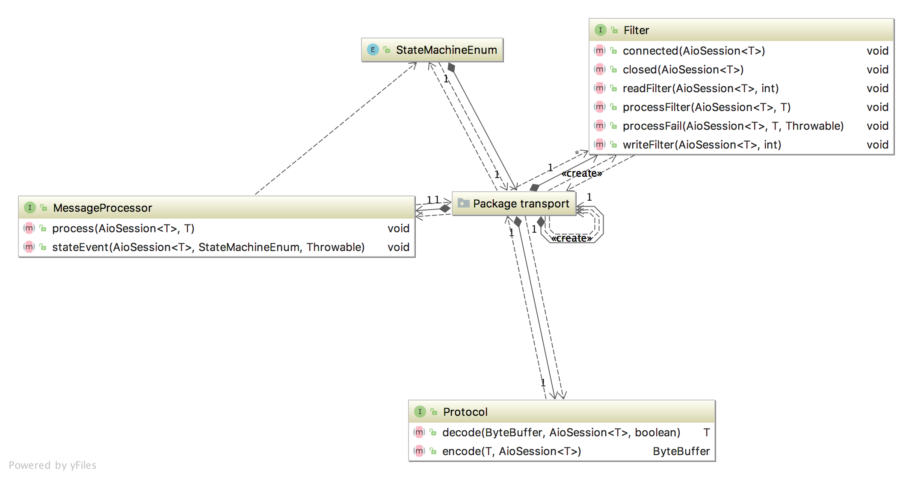

技术手册的厚度，体现了框架的学习难度。smart-socket的学习成本止于本章节，之后各篇为对smart-socket的源码解读，各位看官可酌情选读。 下图即为用户的学习图谱，掌握图中几个接口便可运用smart-socket完成通信开发。 
运用smart-socket进行通信开发，我们唯一要求的技术门槛为：熟练掌握ByteBuffer。至于JDK提供的通信相关的API，smart-socket已经完全封装好了，近一步降低了AIO通信的使用复杂度，如果您对其感兴趣可阅读smart-socket源码借鉴一下。
Maven依赖
smart-socket已上传至Maven仓库，使用前需要向其引入您的项目工程中。
<!-- https://mvnrepository.com/artifact/org.smartboot.socket/aio-core -->
<dependency>
<groupId>org.smartboot.socket</groupId>
<artifactId>aio-core</artifactId>
<version>1.3.11</version>
</dependency>
通信开发
基于smart-socket进行通信服务的开发，主要有三个步骤：
- 协议编解码
- 消息处理
- 启动服务
接下来我们会通过一个简单例子来演示如何通过smart-socket开发服务端与客户端程序。为简化示例，服务端与客户端交互的数据为一个整型数据。
一、协议编解码
通常情况下服务端与客户端通信遵循同一套协议规则，因此我们只需编写一份协议编解码实现即可（如果是跨语言则需要各自实现）。如下所示，协议编解码的需要实现接口Protocol。
public class IntegerProtocol implements Protocol<Integer> {
private static final int INT_LENGTH = 4;
@Override
public Integer decode(ByteBuffer data, AioSession<Integer> session, boolean eof) {
if (data.remaining() < INT_LENGTH)
return null;
return data.getInt();
}
@Override
public ByteBuffer encode(Integer s, AioSession<Integer> session) {
ByteBuffer b = ByteBuffer.allocate(INT_LENGTH);
b.putInt(s);
b.flip();
return b;
}
}
上述代码很简单，一个整数的长度为4byte，所以只要长度大于等于4，我们就能解析到一个整数。
值得注意的是，通过Protocol实现编码encode算法后，开发人员需要确保返回的ByteBuffer是出于可读状态。正如例子所示，完成编码后执行了
flip()方法。
二、消息处理
业务消息的处理需要实现接口MessageProcessor，该接口只有两个方法：process,stateEvent。其中 stateEvent用于定义AioSession状态机的监控与处理。process则会处理每一个接收到的业务消息。
服务端
public class IntegerServerProcessor implements MessageProcessor<Integer> {
@Override
public void process(AioSession<Integer> session, Integer msg) {
Integer respMsg = msg + 1;
System.out.println("接受到客户端数据：" + msg + " ,响应数据:" + (respMsg));
try {
session.write(respMsg);
} catch (IOException e) {
e.printStackTrace();
}
}
@Override
public void stateEvent(AioSession<Integer> session, StateMachineEnum stateMachineEnum, Throwable throwable) {
}
}
客户端
public class IntegerClientProcessor implements MessageProcessor<Integer> {
private AioSession<Integer> session;
@Override
public void process(AioSession<Integer> session, Integer msg) {
System.out.println("接受到服务端响应数据：" + msg);
}
@Override
public void stateEvent(AioSession<Integer> session, StateMachineEnum stateMachineEnum, Throwable throwable) {
switch (stateMachineEnum) {
case NEW_SESSION:
this.session = session;
break;
default:
System.out.println("other state:" + stateMachineEnum);
}
}
public AioSession<Integer> getSession() {
return session;
}
}
三、启动服务
服务端
public class IntegerServer {
public static void main(String[] args) throws IOException {
AioQuickServer<Integer> server = new AioQuickServer<Integer>(8888, new IntegerProtocol(), new IntegerServerProcessor());
server.start();
}
}
客户端
public class IntegerClient {
public static void main(String[] args) throws Exception {
IntegerClientProcessor processor = new IntegerClientProcessor();
AioQuickClient<Integer> aioQuickClient = new AioQuickClient<Integer>("localhost", 8888, new IntegerProtocol(), processor);
aioQuickClient.start();
processor.getSession().write(1);
Thread.sleep(1000);
aioQuickClient.shutdown();
}
}